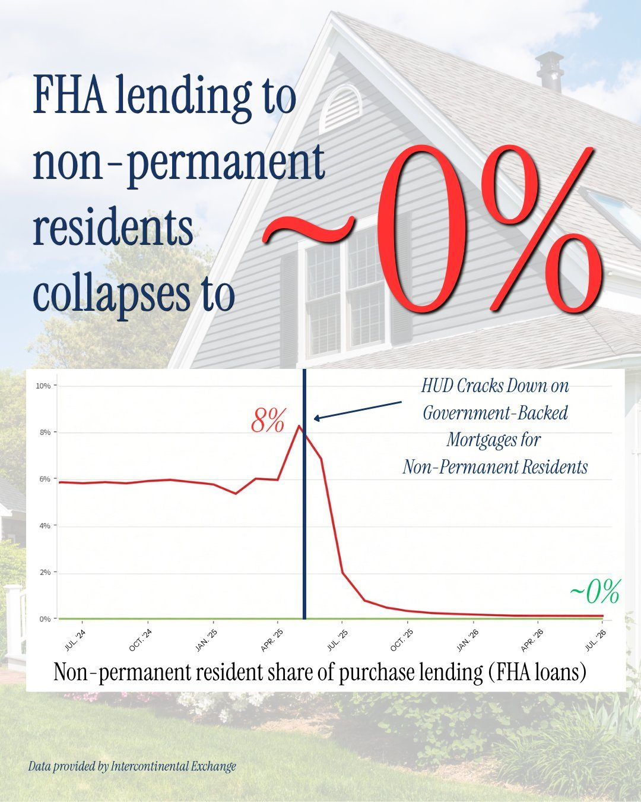
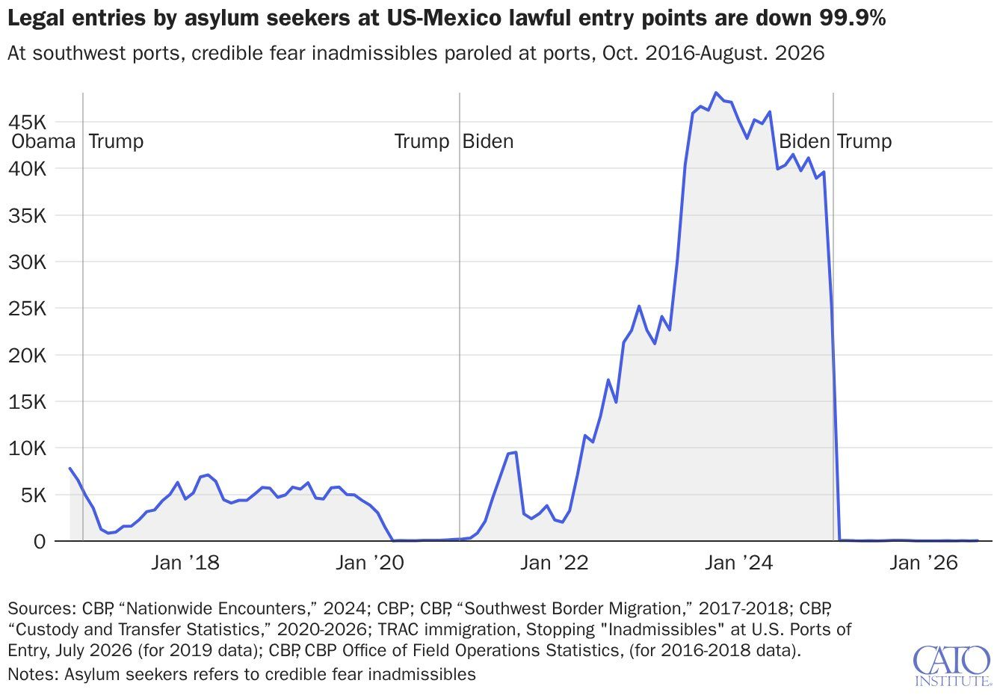
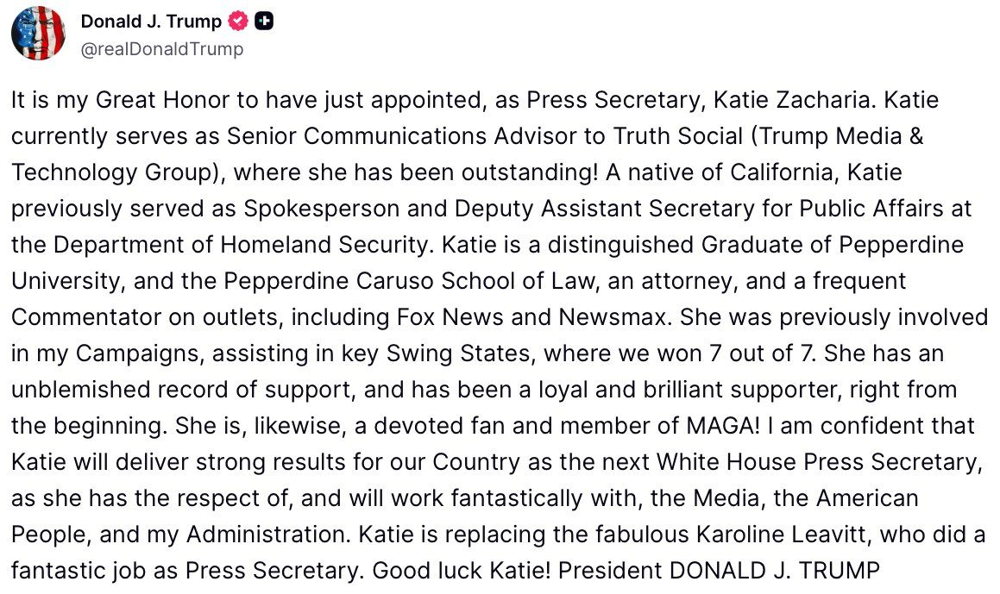
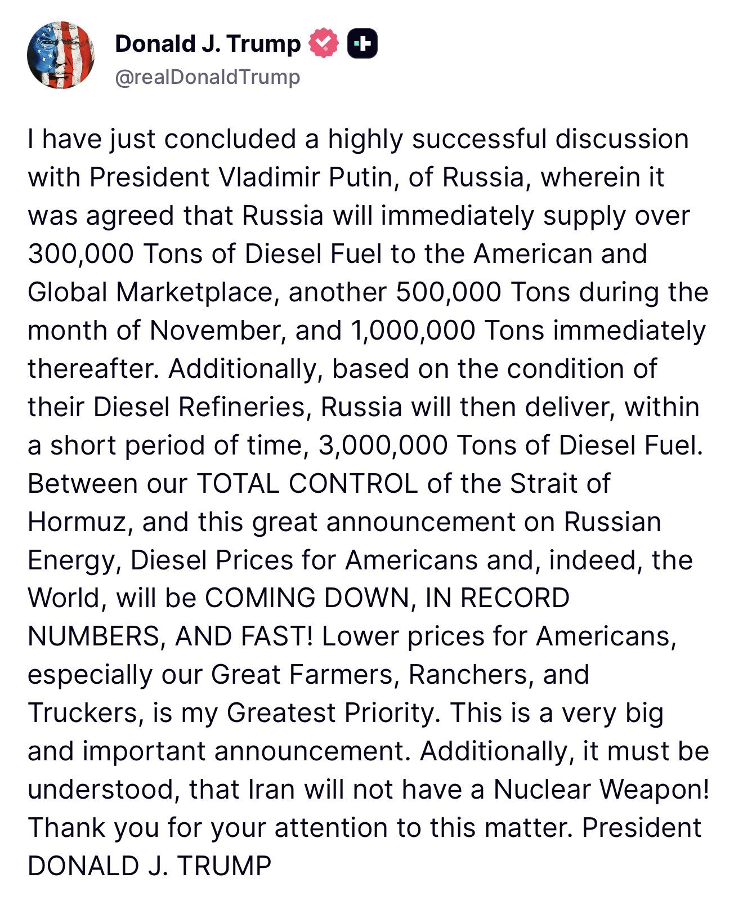
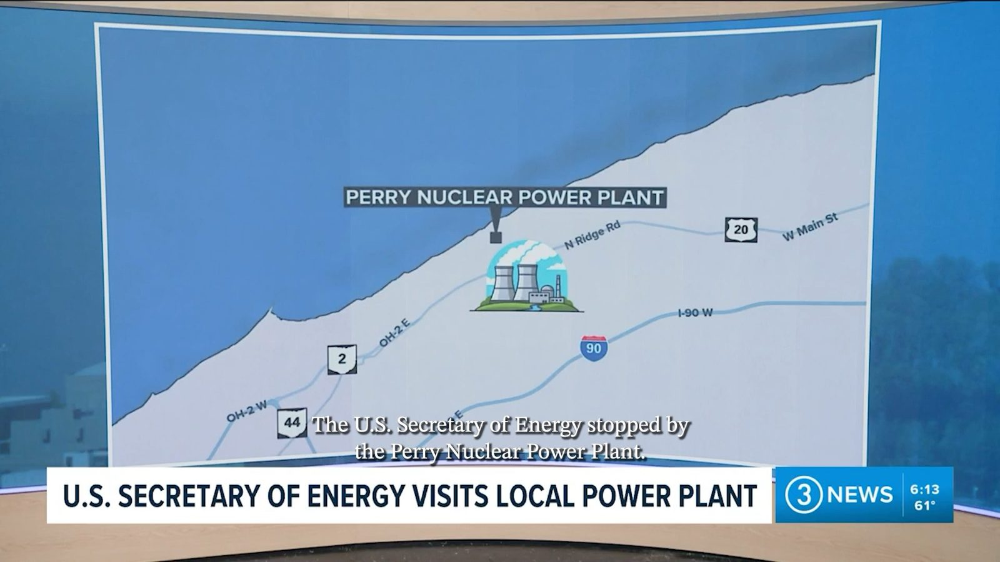
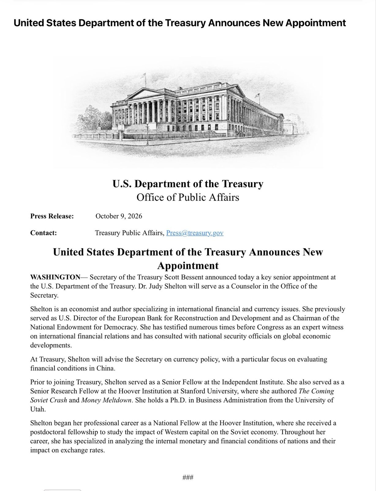
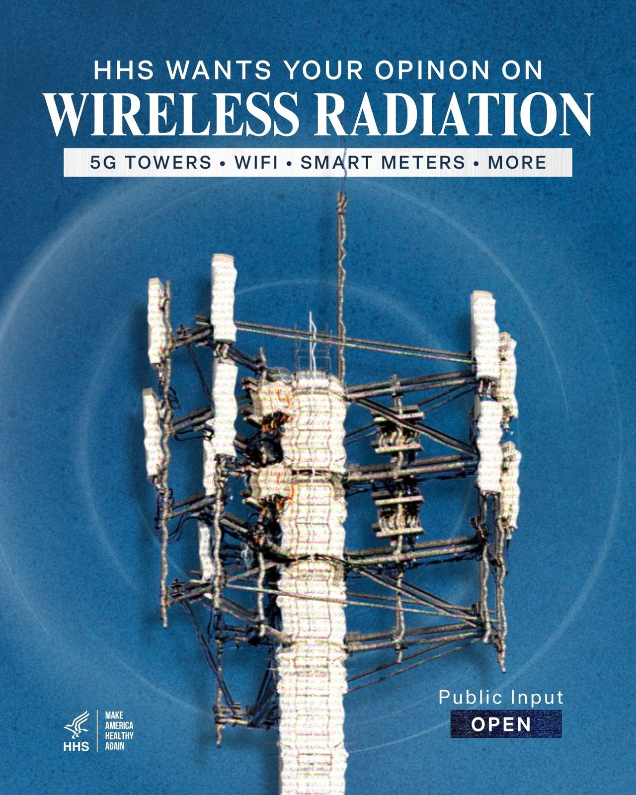

🚨 BREAKING: President Trump just announced a MAJOR deal with Vladimir Putin to flood the market with RUSSIAN DIESEL and lower prices MILLIONS OF TONS of diesel. WOW! "Russia will immediately supply over 300,000 Tons of Diesel Fuel to the American and Global Marketplace, another 500,000 Tons during the month of November, and 1,000,000 Tons immediately thereafter." "Additionally, based on the condition of their Diesel Refineries, Russia will then deliver, within a short period of time, 3,000,000 Tons of Diesel Fuel." "Between our TOTAL CONTROL of the Strait of Hormuz, and this great announcement on Russian Energy, Diesel Prices for Americans and, indeed, the World, will be COMING DOWN, IN RECORD NUMBERS, AND FAST!" "Lower prices for Americans, especially our Great Farmers, Ranchers, and Truckers, is my Greatest Priority." That's nearly 5 MILLION tons of diesel heading to market Trump is the dealmaker in chief! 🇺🇸
On October 8, at approximately 4:00 PM ET, ICE officers were conducting a targeted enforcement operation in the Bronx, New York, to arrest a criminal illegal alien from the Dominican Republic with a prior criminal conviction for grand larceny, and multiple prior arrests for assault, robbery, possession of drugs, and weapons possession. He has associations to the Trinitarios gang, the same gang who brutally shot a CBP officer last year.
This criminal illegal alien was arrested by the NYPD on December 7, 2023, but was released into the community a few days later by reckless Democrat sanctuary policies that put American lives at risk.
During the incident, an ICE officer discharged his weapon and the criminal illegal alien was injured.
ICE officers immediately rendered aid. The individual is alive and at a local hospital. The FBI and HSI are on the scene. The incident remains under investigation. More information will be shared as it becomes available.
When dangerous illegal aliens are released back onto the streets by radical sanctuary politicians, our officers are forced to make arrests at large in the community in unpredictable and dangerous environments. Our officers should not have to risk their lives, and innocent Americans should not have to face unnecessary danger, because sanctuary politicians refuse to cooperate with federal law enforcement.
Prior to HUD’s crackdown, illegal aliens, H-1B visas, and non-permanent residents surged to more than 8% of FHA government-backed mortgages.
This accounts for THOUSANDS of mortgages a year and millions of taxpayer dollars.


#BREAKING: Labor Department crackdown blocks 50,000 H-1B workers from getting green cards.
"It is my Great Honor to have just appointed, as Press Secretary, Katie Zacharia... I am confident that Katie will deliver strong results for our Country as the next White House Press Secretary, as she has the respect of, and will work fantastically with, the Media, the American People, and my Administration." - President Donald J. Trump 🇺🇸

WATCH: A special tribute video honoring President Donald J. Trump’s uncle, Dr. John Trump, plays at the New Golden Age Summit.
Dr. John Trump was awarded the National Medal of Science by President Ronald Reagan in 1983. 🇺🇸
▶ Watch on X.@StephenM: "What we're dealing with here is a Democrat Party, from coast to coast, that is embracing jihadism." 🎯
▶ Watch on X
JUST IN: 🇺🇸🇷🇺 United States officially lifts sanctions on Russian diesel imports until April 2027.
MASSIVE line for President Trump’s rally in Syracuse New York!
The line is so long it’s exceeded the barriers and has stretched all the way through the parking lot
Incredible turnout for President Trump & Bruce Blakeman in “blue” New York!
.@SecretaryWright visited the Perry Nuclear Power Plant where @ENERGY investments are extending the plant’s operating life:
✅Increasing generation by 220MW
✅Powering 150,000 American homes
✅Lowering costs and supporting jobs

▶ Watch on XTrump to slam Hochul over immigration at Syracuse rally after NYPD detective stabbing, Bronx ICE shooting
THE BLOCK: Evernorth has completed its SPAC merger with Armada II, bringing approximately 473 million XRP and $300 million in gross cash proceeds into the public markets.
The $XRP treasury company expects to begin trading on Nasdaq on Monday under XRPN.
Event contracts are used by Americans every day to hedge risks, speculate, and provide the public with information about the outcome of future events.
With this move, the @CFTC is taking another important step to clarify that these commodity derivatives fall squarely within the CFTC’s regulatory remit under the Commodity Exchange Act and are subject to the agency’s exclusive jurisdiction.
Tokenized Treasuries are coming onto Canton.
@BSCNews breaks down how tokenizing a government bond works, DTCC's Tokenization Service, why institutions want bonds on Canton, and what's happened this year.
Citrini Research is making the case that a “new paradigm of ‘fundamental crypto investing’” has arrived because agentic finance will be built on top of blockchains.
.@CFTC Seeks Public Comment on Notice of Proposed Rulemaking Concerning the Inclusion of Certain Event Contracts in the Definition of Swap.
.@USComptroller Jonathan V. Gould: @POTUS and @SecScottBessent are leading a community bank comeback by unleashing Parallel Prosperity for Main Street and Wall Street. We are cutting unnecessary regulatory friction, tailoring supervision to actual risk, and strengthening community banks’ ability to grow and continue to meet the needs of the customers and small businesses they serve.

What should we know about wireless exposure?
HHS is seeking public input and scientific evidence on electromagnetic fields, radiofrequency radiation, and potential health effects — including questions about 5G, Wi-Fi, and wireless infrastructure.
Share your input through our Request for Information (RFI) by October 21.

JUST IN: RFK Jr.’s HHS launches inquiry into potential health risks associated with wireless radiation, including exposure from 5G towers & Wi-Fi.
.@USComptroller Jonathan V. Gould: Cracking down on fraud has been a top priority of the Trump Administration from day one. Under the leadership of @POTUS Trump and @VP Vance – who coordinates the interagency Task Force to Eliminate Fraud – as well as @SecScottBessent, we have put the force and gravitas of the entire U.S. government behind that commitment.
After six years in stealth, Atomic Machines is out. Our mission: on-demand, universal command of matter. First beachhead: the Matter Compiler, an AI-native manufacturing system that builds working micro-machines from code alone. No per-product tooling. No process development. Different code, different machine.
Iranian operatives used OpenAI models and fake personas to help plant news articles critical of the US war against Iran in multiple US media outlets, OpenAI said.
And you — @CNN — fall for it over and over.
Because you hate the President more than you love the country (and our troops).
Dear Prime Minister Ambani,
Please accept my humble apologies for not realizing that you are the real boss of India.
Naturally, you would prefer to maintain your monopolistic exploitation of the great people of India, but would you nonetheless consider allowing Starlink to compete?
There are many areas of India, as there are in all countries, with no Internet access, which denies children the opportunity for education and for small businesses the opportunity to sell their goods to a global market. Starlink would change their lives for the better.
Thank you 🙏
Want to see the Trump manufacturing comeback in real time?
My team put it all on one map: every chip plant, steel mill, and auto factory, state by state.
Check it out! ⤵️
JUST IN: Trump establishes a White House committee to investigate mortgage fraud allegations against Federal Reserve Governor Lisa Cook.
Canada’s economy lost 68,300 jobs in September, with the unemployment rate rising to 6.5%.
#BREAKING: Pentagon says Fort Hood shooter Nidal Hasan's execution will be livestreamed.
US imposes sanctions on International Criminal Court
JUST IN: 🇵🇦 Magnitude 8.0 earthquake strikes Panama.